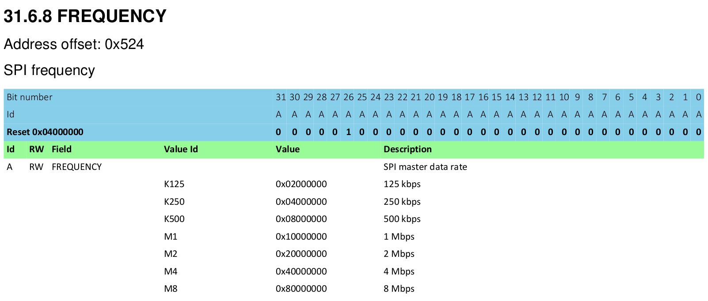

주변장치
주변 장치란 무엇인가요?
대부분의 마이크로컨트롤러에는 CPU, RAM 또는 플래시 메모리 외에 마이크로컨트롤러 외부 시스템과 상호 작용하는 데 사용되는 실리콘 섹션과 센서, 모터 컨트롤러 또는 디스플레이나 키보드와 같은 인간 인터페이스를 통해 주변 환경과 직접 및 간접적으로 상호 작용하는 데 사용되는 실리콘 섹션이 포함되어 있습니다. 이러한 구성 요소를 총칭하여 주변 장치라고 합니다.
이러한 주변 장치는 개발자가 처리를 오프로드하여 소프트웨어에서 모든 것을 처리할 필요가 없도록 해주기 때문에 유용합니다. 데스크톱 개발자가 그래픽 처리를 비디오 카드로 오프로드하는 것과 유사하게 임베디드 개발자는 일부 작업을 주변 장치로 오프로드하여 CPU가 다른 중요한 작업을 수행하거나 전력을 절약하기 위해 아무것도 하지 않도록 할 수 있습니다.
1970년대나 1980년대의 구식 가정용 컴퓨터의 주 회로 기판을 보면(그리고 실제로 어제의 데스크톱 PC는 오늘날의 임베디드 시스템과 그리 멀지 않습니다) 다음과 같은 것을 볼 수 있습니다.
- 프로세서
- RAM 칩
- ROM 칩
- I/O 컨트롤러
RAM 칩, ROM 칩 및 I/O 컨트롤러(이 시스템의 주변 장치)는 '버스'라고 하는 일련의 병렬 트레이스를 통해 프로세서에 연결됩니다. 이 버스는 프로세서가 통신하려는 버스의 장치를 선택하는 주소 정보와 실제 데이터를 전달하는 데이터 버스를 전달합니다. 임베디드 마이크로컨트롤러에서도 동일한 원칙이 적용됩니다. 단지 모든 것이 단일 실리콘 조각에 패키징되어 있다는 점만 다릅니다.
그러나 일반적으로 Vulkan, Metal 또는 OpenGL과 같은 소프트웨어 API가 있는 그래픽 카드와 달리 주변 장치는 메모리 청크에 매핑된 하드웨어 인터페이스를 통해 마이크로컨트롤러에 노출됩니다.
선형 및 실제 메모리 공간
마이크로컨트롤러에서 0x4000_0000 또는 0x0000_0000과 같은 다른 임의의 주소에 일부 데이터를 쓰는 것도 완전히 유효한 작업일 수 있습니다.
데스크톱 시스템에서 메모리 액세스는 MMU 또는 메모리 관리 장치에 의해 엄격하게 제어됩니다. 이 구성 요소는 메모리 섹션에 대한 액세스 권한을 적용하고(한 프로세스가 다른 프로세스의 메모리를 읽거나 수정하는 것을 방지) 물리적 메모리의 세그먼트를 소프트웨어에서 사용되는 가상 메모리 범위로 다시 매핑하는 두 가지 주요 책임을 가집니다. 마이크로컨트롤러는 일반적으로 MMU가 없으며 대신 소프트웨어에서 실제 물리적 주소만 사용합니다.
32비트 마이크로컨트롤러는 0x0000_0000에서 0xFFFF_FFFF까지의 실제 및 선형 주소 공간을 가지고 있지만 일반적으로 실제 메모리에 대해 해당 범위의 수백 킬로바이트만 사용합니다. 이로 인해 상당한 양의 주소 공간이 남게 됩니다. 이전 장에서는 RAM이 0x2000_0000 주소에 위치한다고 이야기했습니다. RAM이 64KiB 길이(즉, 최대 주소가 0xFFFF)라면 0x2000_0000에서 0x2000_FFFF까지의 주소는 RAM에 해당합니다. 0x2000_1234 주소에 있는 변수에 쓸 때 내부적으로 발생하는 일은 일부 논리가 주소의 상위 부분(이 예에서는 0x2000)을 감지한 다음 RAM을 활성화하여 주소의 하위 부분(이 경우 0x1234)에 대해 작동할 수 있도록 하는 것입니다. Cortex-M에서는 플래시 ROM이 0x0000_0000 주소에서 최대 0x0007_FFFF 주소(512KiB 플래시 ROM이 있는 경우)까지 매핑되어 있습니다. 이 두 영역 사이의 모든 나머지 공간을 무시하는 대신 마이크로컨트롤러 설계자는 특정 메모리 위치에 주변 장치용 인터페이스를 매핑했습니다. 이것은 다음과 같이 보입니다.

메모리 매핑 주변장치
이러한 주변 장치와의 상호 작용은 언뜻 보기에는 간단합니다. 올바른 데이터를 올바른 주소에 쓰는 것입니다. 예를 들어, 직렬 포트를 통해 32비트 워드를 보내는 것은 특정 메모리 주소에 해당 32비트 워드를 쓰는 것만큼 직접적일 수 있습니다. 그러면 직렬 포트 주변 장치가 인계받아 데이터를 자동으로 보냅니다.
이러한 주변 장치의 구성도 비슷하게 작동합니다. 주변 장치를 구성하기 위해 함수를 호출하는 대신 하드웨어 API 역할을 하는 메모리 청크가 노출됩니다. SPI 주파수 구성 레지스터에 0x8000_0000을 쓰면 SPI 포트는 초당 8메가비트로 데이터를 보냅니다. 동일한 주소에 0x0200_0000을 쓰면 SPI 포트는 초당 125킬로비트로 데이터를 보냅니다. 이러한 구성 레지스터는 다음과 같이 보입니다.

이 인터페이스는 어셈블리, C 또는 Rust 등 어떤 언어를 사용하든 하드웨어와 상호 작용하는 방식입니다.